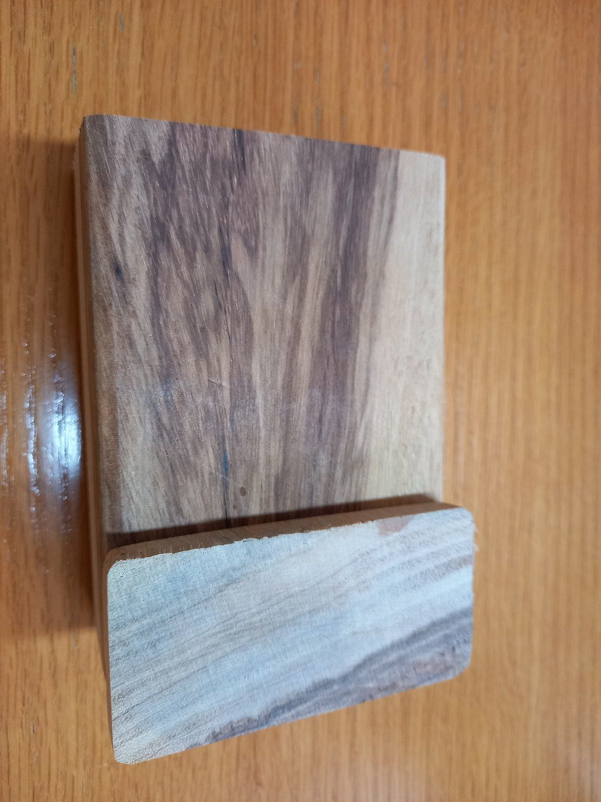
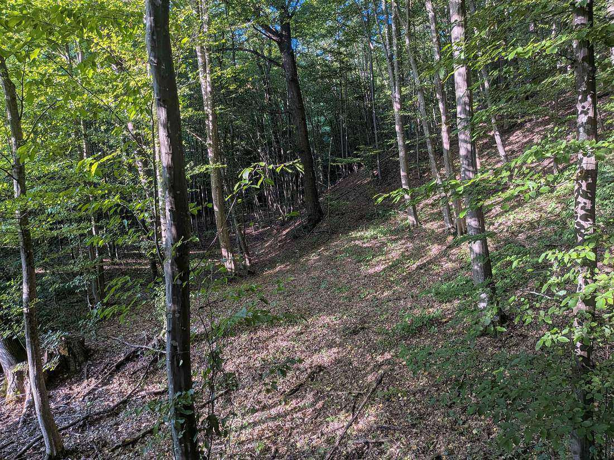
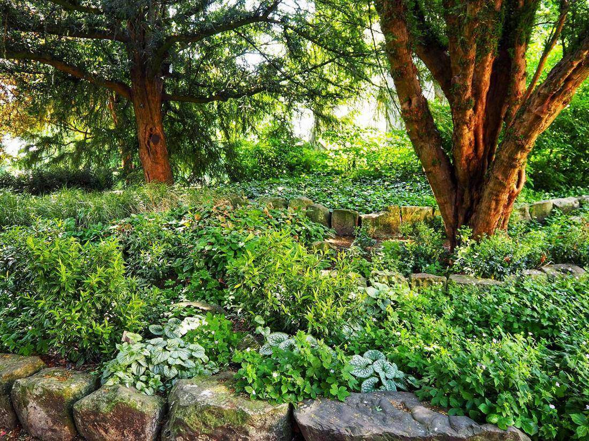

② シート ─ 腰を預ける座面
このサイトについて
このページは、Inuyama975cafe の試作ホームページ(サンプル)です。ご契約後に、実際の写真と情報へ差し替えます。
写真帯 ─ イメージ



構成の考え方
「家庭・設備・機械の物の部位の配置図」という型で、ペダルカーを六つの部位に分けました。ハンドル・シート・クランク・フレーム・タイヤ・ペダルが、それぞれページや区切りに対応します。
ペダルカーは制作側の連想で、お店の理念・由来とは無関係です。
- ①ハンドル向きを決める輪。入口の目印
- ②シート腰を預ける座面
- ③クランクペダルの動きを回す腕
- ④フレーム全体をつなぐ車体の骨
- ⑤タイヤ地面に触れる輪
- ⑥ペダル足をのせて踏み込む板
写真帯 ─ イメージ
